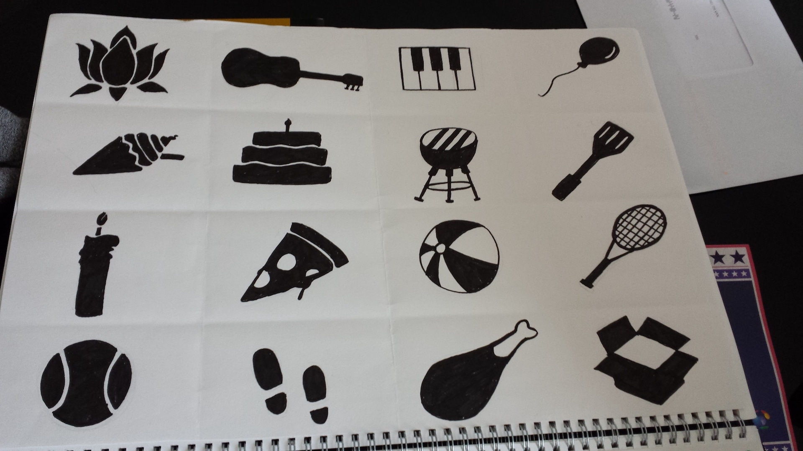
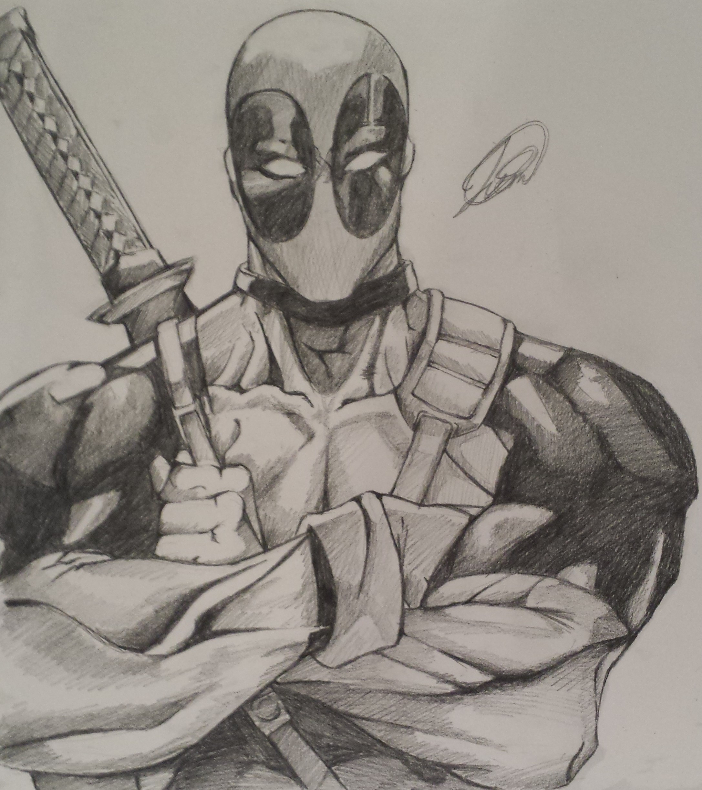

Art / Graphics
Here are some of the works I did during A-Levels
Contents
Graphics Communications
This is the Isotype work I did based off the work of Gerd Arntz who is known for black and white woodcuts.


Unit 4
For my fourth unit, I had to produce a menu for a burger restaurant. Here I used watercolours to produce the images of food and created the rest of the digital parts on photoshop.
Fine Art
During my time in A-Levels I improved my skills in using acrylic paint as well as water colours. My graphics work also benefitted this.
The improved version
Portraits
In my final year, my project was based around portraits.
GCSE
These are some of the pieces of coursework I did during GCSE.
Miscellaneous
As art is one of my hobbies, these are some things I have made in my spare time


Interested in more of my art?
Check out my deviantart page: (link)